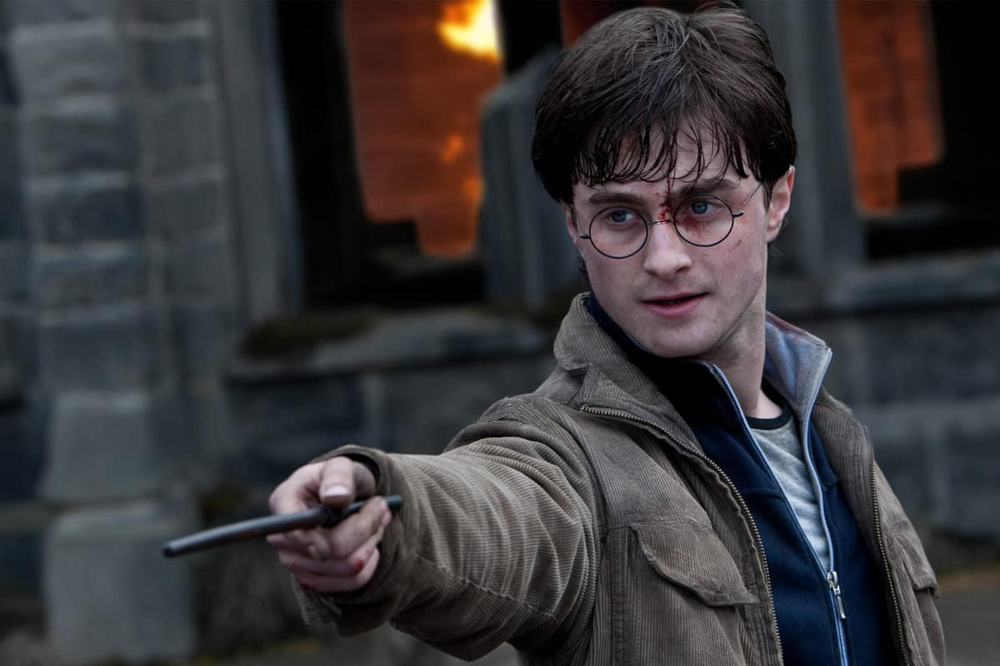

<!DOCTYPE html>
<html>
    <title>Harry Potter Characters</title>
    <meta charset="UTF-8">
    <meta name="Description" content="Working with Fonts">
    <meta name="Author" content="Cutter Thatcher">
    <meta name="viewport" content="width=device-width, initial-scale=1.0">
    <link rel="stylesheet" href="./css/fonts.css" type="text/css" />
    <link rel="stylesheet" href="./css/style.css" type="text/css" />
</html>
<body>
    <h1>Harry Potter Characters</h1>
    <div class="main-container">
        <div class="harry-container">
            
            An orphan mistreated by the Dursley family, Harry learns on his eleventh birthday that he is a wizard. Sorted into Gryffindor at Hogwarts School of Witchcraft and Wizardry, he forms close bonds with friends Ron Weasley and Hermione Granger. Known as "The Boy Who Lived," Harry survived a curse from the dark wizard Lord Voldemort as a baby, leaving him with a distinctive lightning-shaped scar. A skilled Quidditch player and courageous wizard, Harry discovers his link to Voldemort and becomes the primary target of the dark wizard's attempts to regain power. Throughout the series, Harry exemplifies bravery, loyalty, and a willingness to sacrifice for the greater good. As the chosen one, he plays a pivotal role in the battle against dark forces, showcasing significant personal growth and resilience.
        </div>
    </div>
</body>